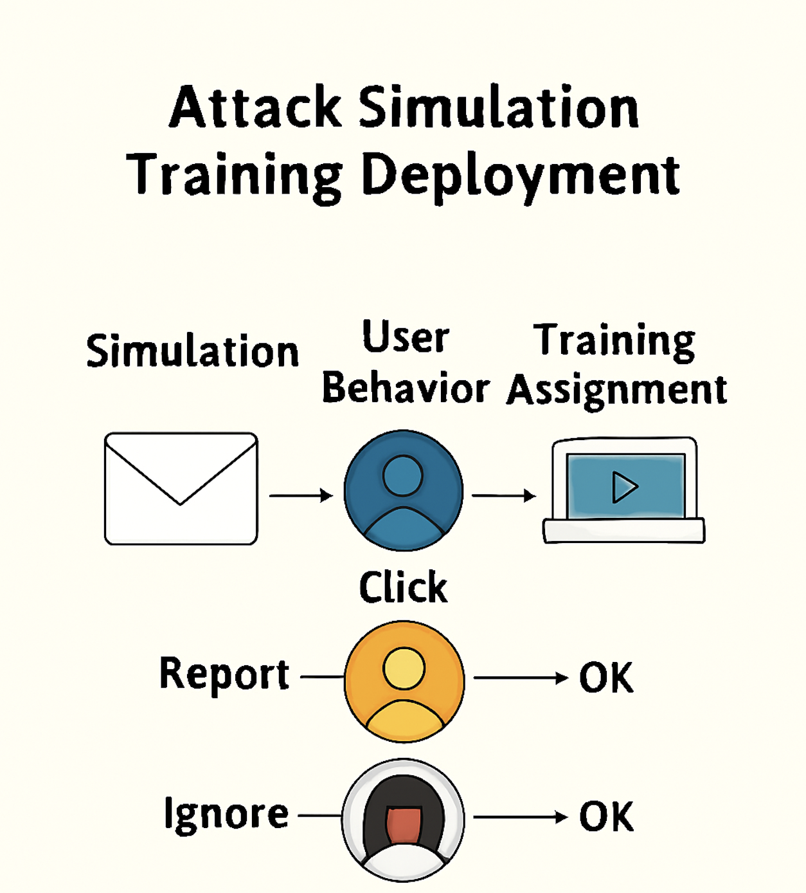

Challenge
Users were vulnerable to phishing and social engineering attacks. The goal was to deploy Microsoft Defender Attack Simulation Training to raise awareness, reduce risk, and align user education with the MITRE ATT&CK® framework.
Tools & Technologies
- Microsoft Defender for Office 365 Plan 2
- Attack Simulation Training Portal
- Credential Harvest, Malware, OAuth, and QR Payloads
- Simulation Automations & Training Campaigns
- MITRE ATT&CK® Framework Alignment
Implementation
- Followed Microsoft’s Attack Simulation Training guide
- Configured permissions and roles for simulation admins and payload authors
- Launched simulations using real-world phishing techniques from the MITRE ATT&CK® framework
- Assigned targeted training based on user behavior (clicks, credential entry, reporting)
- Used simulation automations to schedule recurring campaigns with varied payloads
- Monitored user progress and campaign effectiveness through built-in reports
Architecture Diagram

Impact
- Increased user awareness of phishing and social engineering tactics
- Reduced click-through and credential submission rates in simulations
- Aligned user training with MITRE ATT&CK® techniques
- Established a repeatable, automated training framework for ongoing awareness